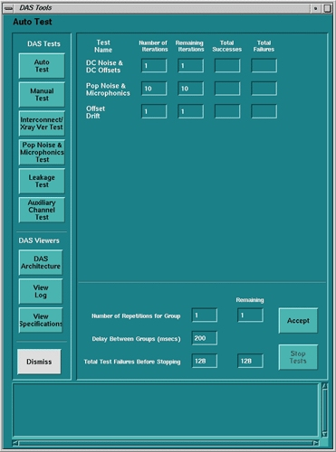

Operating Documentation
Direction 5181166-800, Rev# 7
BrightSpeed Select Service Methods Adv
Operating Documentation |
The difference between auto test and manual test is that the auto test feature runs a default number of iterations of each of the sub-tests, while the manual mode allows the user to specifically select a sub-test(s) and the number of iterations for that selection of test(s).
The following tests are executed during auto test (GUI shown in Illustration 1):
Illustration 1: Auto Test / Manual Test

A series of data collection scans, over a course of 120 seconds, and the offset means values are analyzed to measure the amount of variance over 120 seconds of scanning. There are 3 scans taken in a 4 x 5.00mm mode / Gain 31 and 3 scans in a 8 x 1.25mm mode / Gain 10 with a delay of 60 seconds between each scan. The absolute value of the Means are taken and compared.
There should be very little or no drift between the first scan of each scan mode and the scan taken 120 seconds later. The spec is ±3 counts for each channel across a 120 seconds time.
Table 1: Offset Drift Test
| SCAN # | DAS GAIN | SCAN MODE | DESCRIPTION |
|---|---|---|---|
| 1 | 31 | 4 x 5.00mm | Initial Offsets scan at specific technique |
| 2 | 31 | 4 x 5.00mm | Offset scan after 60 second interscan |
| 3 | 31 | 4 x 5.00mm | Offset scan after another 60 second interscan |
| 4 | 3 | 8 x 1.25mm | Initial Offsets scan at specific technique |
| 5 | 3 | 8 x 1.25mm | Offset scan after 60 second interscan |
| 6 | 3 | 8 x 1.25mm | Offset scan after another 60 second interscan |
Therefore, from Table 1 above, the difference in counts between scans 1 & 3 must be within 5.5 counts for 364-415 channels and 7.4 counts for 1-363, 416-768 channels, and also the difference in counts between scans 4 & 6 must be within 28 counts for 364-415 channels and 56 counts for 1-363, 416-768 channels. Failure analysis of the drift test may be a bad converter board, but also considerations need to be taken on account of room temperature fluctuations and DAS warm-up time. It may be normal for this test to fail if it is executed immediately after turning on the DAS.
A series of predefined rotating scans, w/o x-ray, and the scan data saved on disk for analysis. The scan data is then view averaged and the standard deviations are measured against a spec limit.
This test takes a series of three scans. In the auto-mode, it takes ten iterations of the series. Failure analysis of this test is dependent on test results. Pop/Noise and microphonics issues can be caused by many system related conditions. Some of the most common could be the DAS/Detector interface (such as elastomer connection caused by dirt, oil, debris), flex top cover clamp torque incorrect, air plenum not installed, fan orientation not correct, power supply noise, electrical connections, gantry rotation/mechanical issues, and external influences.
It is very important to look at patterns relative to DAS/Detector architecture, gantry rotation (azimuth position as well as velocity), and high voltage (with or without x-ray, rotor on/off).
Table 2: Microphonic Noise Scans
| Scan # | Gantry Rotation | X-Ray | Rotor | Acquisition Mode | DAS Gain | Scan Time/VPS | Scan Data Saved |
|---|---|---|---|---|---|---|---|
| 1 | Rotating | No X-Ray | On | 4 X 5.00 | 31 | 1 / 984 | Raw |
| 2 | Rotating | No X-Ray | On | 8 X 1.25 | 5 | 1 / 984 | Raw |
| 3 | Rotating | No X-Ray | On | 8 X 1.25 | 5 | 0.5 / 1640 | Raw |
Table 3: Microphonic Noise Spec Limits
| Channel Zones / Maximum DAS Counts Spec Limits | |||||||
|---|---|---|---|---|---|---|---|
| Scan # | Acquisition Mode | DAS Gain | 1 - 64 705 - 750 | 65 - 224 561 - 704 | 225 - 560 | 751 - 762 | 763 - 768 |
| 1 | 4 X 5.00 | 31 | 33.2 | 24.0 | 18.5 | 40.6 | 29.5 |
| 2 | 8 X 1.25 | 5 | 119.0 | 81.6 | 63.0 | 142.3 | 119.0 |
| 3 | 8 X 1.25 | 5 | 119.0 | 81.6 | 63.0 | 142.3 | 119.0 |
This test collects DAS data with zero input current (no x-ray) and the mean value of each output channel is compared to spec. Also, the standard deviation is measured against a noise spec. It involves two scans, the first in a 4 x 5.00mm mode, gain of 31 and the other in a 8 x 1.25mm mode, gain 3.
Failure analysis is similar to that of DC Cal, with the exception that there is no input test voltage applied. Depending on failed pattern, based on DAS/Detector architecture, the fault may be a converter board, DAS/Detector interface, or power supply.
Table 4: Offset and Noise Scans
| Scan # | Gantry Rotation | X-Ray | Rotor | Acquisition Mode | DAS Gain | Scan Time/VPS | Scan Data Saved |
|---|---|---|---|---|---|---|---|
| 1 | Stationary 0° Deg. | No X-Ray | Off | 4 X 5.00 | 31 | 1 / 984 | Raw |
| 2 | Stationary 0° Deg. | No X-Ray | Off | 8 X 1.25 | 3 | 1 / 984 | Raw |
Table 5: Offset value - Analyze “Means - Raw”
| Channel Zones / Maximum DAS Counts Spec Limits | ||||||
|---|---|---|---|---|---|---|
| Scan # | Acquisition Mode | DAS Gain | 1 - 64 705 - 750 | 65 - 704 | 751 - 762 | 763 - 768 |
| 1 | 4 X 5.00 | 31 | 420 ±70 | 420 ±70 | 420 ±70 | 420 ±70 |
| 2 | 8 X 1.25 | 3 | 930 ±200 | 930 ±200 | 930 ±200 | 930 ±200 |
Table 6: Noise value - Analyze “Standard Deviations - Raw”
| Channel Zones / Maximum DAS Counts Spec Limits | ||||||
|---|---|---|---|---|---|---|
| Scan # | Acquisition Mode | DAS Gain | 1 - 64 | 64 - 704 | 751 - 762 | 705 - 750, 763 -738 |
| 1 | 4 X 5.00 | 31 | 15.4 | 13.8 | 19.4 | 13.8 |
| 2 | 4 X 1.25 | 3 | 57.2 | 47.0 | 65.4 | 57.2 |